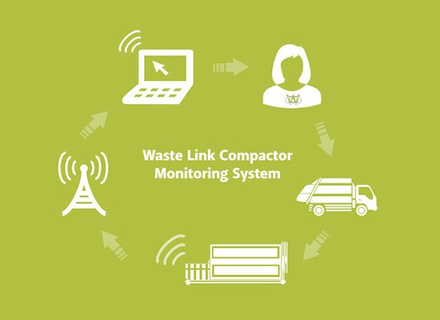
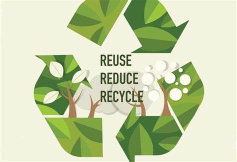

Our Services
 Waste collection
Waste collection

- Waste collection
- Waste disposal
- Waste Monitoring Reuse and recyle of waste
The ‘WASTE MANAGEMENT SYSTEM’ is a web application aimed to provide a digital way of complaining the concerns of general citizens to their relative municipalities. Complaining about waste or garbage problems near their locality. See thier complain Report and check if the work is done! or not. people can take different ideas regarding recycling of waste through this website. Complaining about the waste problem encountered everyday to municipality is hefty process and waste management aims to make this process easier. With a simple handheld device with access to internet, user can use this platform complain their concerns to municipality . The automated system will redirect the complains .The municipality admins at the receiving side can acknowledge the reports which lets the users whether their complain is adddressed or not.
Waste collection